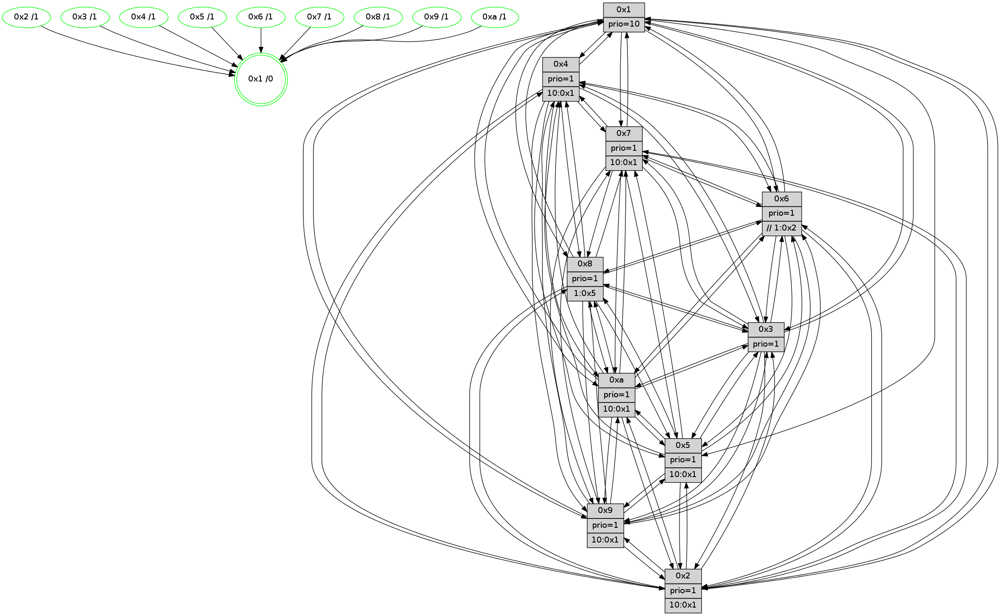

>> << IDX [start] -100 -25 -5 +0 +5 +25 [1610.58016205]
 Previous packets
----------------------------------------------------------------------
1605.063245 beacon01(faad) #0 coord=01,02,03,04,05,06,07,0a,09,08 cycle=688.0ms assoc
-- color-indic=1 64 82 a0
1605.073228 beacon02(faad) #0 coord=01,02,03,04,05,06,07,0a,09,08 cycle=688.0ms assoc 64 11 91
1605.083227 beacon03(faad) #0 coord=01,02,03,04,05,06,07,0a,09,08 cycle=688.0ms assoc 64 6b dc
1605.093227 beacon04(faad) #0 coord=01,02,03,04,05,06,07,0a,09,08 cycle=688.0ms assoc 64 1c 36
1605.103228 beacon05(faad) #0 coord=01,02,03,04,05,06,07,0a,09,08 cycle=688.0ms assoc 64 66 7b
1605.113228 beacon06(faad) #0 coord=01,02,03,04,05,06,07,0a,09,08 cycle=688.0ms assoc 64 e8 ac
1605.123229 beacon07(faad) #0 coord=01,02,03,04,05,06,07,0a,09,08 cycle=688.0ms assoc 64 92 e1
1605.133236 beacon0a(faad) #0 coord=01,02,03,04,05,06,07,0a,09,08 cycle=688.0ms assoc 64 e3 ea
1605.143232 beacon09(faad) #0 coord=01,02,03,04,05,06,07,0a,09,08 cycle=688.0ms assoc 64 6d 3d
1605.153234 beacon08(faad) #0 coord=01,02,03,04,05,06,07,0a,09,08 cycle=688.0ms assoc 64 17 70
1605.166357 [Hello(5): seq=1023 sym=7,6,4,2,1,9,8,10,3 sysInfo=hasWarning stat=7:8,9,5,2/6:8,15,5,4/4:5,12,8,1/2:5,5,6,2/1:5,14,2,0/9:0,7,2,15/8:0,9,12,10/10:8,6,6,13/3:7,2,7,0]
1605.169839 [STC(1) #0.292 new-neigh,tree-change,inconsistent-stability,stable,to-color d=0]
1605.171314 [Color(8) seq=610 @0:0 prio=1 >1.@5,1.@6,1.@7,1.@9]
1605.173073 [Hello(2): seq=1019 sym=4,5,7,6,3,9,8,10,1 sysInfo=hasWarning stat=4:3,5,15,1/5:13,1,0,5/7:9,14,8,4/6:11,3,3,1/3:1,8,6,1/9:13,1,12,13/8:15,13,12,1/10:11,4,12,15/1:3,3,2,0]
1605.175882 [Color(2) seq=583 @0:0 prio=1 >10.@1,1.@3,1.@4,1.@5]
1605.178957 [Hello(3): seq=1023 sym=1,7,6,2,4,8,9,10,5 sysInfo=hasWarning stat=1:1,8,12,0/7:4,10,9,1/6:5,11,3,1/2:3,2,3,0/4:15,8,7,1/8:13,15,14,10/9:11,10,15,4/10:3,2,6,8/5:2,1,10,4]
1605.182270 [Hello(6): seq=1023 sym=3,2,5,4,7,9,8,10,1 sysInfo=hasWarning stat=3:4,7,1,1/2:15,4,8,3/5:8,0,5,8/4:12,15,15,12/7:5,15,3,2/9:2,1,3,14/8:7,11,9,12/10:9,2,13,1/1:15,6,7,1]
1605.185086 [Color(6) seq=655 @0:0 prio=1 >>1.@2,1.@3,1.@4]
1605.187989 [Color(3) seq=652 @0:0 prio=1]
----------------------------------------------------------------------
1605.851374 beacon01(faad) #0 coord=01,02,03,04,05,06,07,0a,09,08 cycle=688.0ms assoc
-- color-indic=1 64 3e a5
1605.861356 beacon02(faad) #0 coord=01,02,03,04,05,06,07,0a,09,08 cycle=688.0ms assoc 64 ad 94
1605.871358 beacon03(faad) #0 coord=01,02,03,04,05,06,07,0a,09,08 cycle=688.0ms assoc 64 d7 d9
1605.881360 beacon04(faad) #0 coord=01,02,03,04,05,06,07,0a,09,08 cycle=688.0ms assoc 64 a0 33
1605.891358 beacon05(faad) #0 coord=01,02,03,04,05,06,07,0a,09,08 cycle=688.0ms assoc 64 da 7e
1605.901358 beacon06(faad) #0 coord=01,02,03,04,05,06,07,0a,09,08 cycle=688.0ms assoc 64 54 a9
1605.911360 beacon07(faad) #0 coord=01,02,03,04,05,06,07,0a,09,08 cycle=688.0ms assoc 64 2e e4
1605.921363 beacon0a(faad) #0 coord=01,02,03,04,05,06,07,0a,09,08 cycle=688.0ms assoc 64 5f ef
1605.941363 beacon08(faad) #0 coord=01,02,03,04,05,06,07,0a,09,08 cycle=688.0ms assoc 64 ab 75
1605.954193 [Hello(8): seq=967 sym=5,2,3,7,9,6,4,10,1 sysInfo=hasWarning stat=5:11,4,11,4/2:1,15,5,0/3:0,8,9,6/7:15,8,8,1/9:11,3,13,9/6:12,7,7,5/4:3,9,2,3/10:5,3,3,7/1:0,2,10,0]
1605.956922 [Hello(10): seq=956 sym=6,2,3,8,7,5,9,4,1 sysInfo=hasWarning stat=6:2,5,2,10/2:11,10,6,4/3:1,14,13,1/8:14,12,8,8/7:6,8,3,1/5:15,0,8,5/9:3,8,2,0/4:8,10,14,5/1:13,2,8,1]
1605.960893 [Color(1) seq=703 @0:0 prio=10]
1605.962487 [Hello(7): seq=1023 sym=2,3,5,6,8,4,9,10,1 sysInfo=hasWarning stat=2:0,4,2,8/3:2,10,7,8/5:3,14,15,7/6:12,11,1,2/8:8,3,9,3/4:1,7,7,2/9:6,4,10,5/10:7,12,1,1/1:15,11,5,0]
1605.965500 [STC(5)->1 #0.292 new-neigh,tree-change,inconsistent-stability,stable,to-color d=1]
1605.967369 [Hello(9): seq=967 sym=2,5,3,4,7,6,8,10,1 sysInfo=hasWarning stat=2:9,5,5,15/5:12,13,10,2/3:8,9,3,8/4:0,3,0,0/7:9,10,2,2/6:6,5,2,6/8:15,1,11,11/10:1,2,0,0/1:7,8,9,1]
1605.970201 [STC(9)->1 #0.292 new-neigh,tree-change,inconsistent-stability,stable,to-color d=1]
1605.972165 [Color(9) seq=549 @0:0 prio=1 >10.@1,1.@5,1.@6,1.@7]
1605.975076 [STC(10)->1 #0.292 new-neigh,tree-change,inconsistent-stability,stable,to-color d=1]
1605.976453 [STC(7)->1 #0.292 new-neigh,tree-change,inconsistent-stability,stable,to-color d=1]
1605.978962 [TreeStatus(10)-.->1 #0.292 new-neigh,tree-change,inconsistent-stability,stable child=1]
1605.980149 [Color(7) seq=530 @0:0 prio=1 >10.@1,1.@5,1.@6,1.@8]
1605.981779 [Color(4) seq=540 @0:0 prio=1 >10.@1,1.@2,1.@3,1.@5]
1605.984139 [Color(10) seq=600 @0:0 prio=1 >10.@1,1.@5,1.@6,1.@7]
1605.990081 [Color(5) seq=548 @0:0 prio=1 >10.@1,1.@6,1.@7,1.@8]
----------------------------------------------------------------------
1606.639506 beacon01(faad) #0 coord=01,02,03,04,05,06,07,0a,09,08 cycle=688.0ms assoc
-- color-indic=1 64 ea 90
1606.649488 beacon02(faad) #0 coord=01,02,03,04,05,06,07,0a,09,08 cycle=688.0ms assoc 64 79 a1
1606.659489 beacon03(faad) #0 coord=01,02,03,04,05,06,07,0a,09,08 cycle=688.0ms assoc 64 03 ec
1606.669489 beacon04(faad) #0 coord=01,02,03,04,05,06,07,0a,09,08 cycle=688.0ms assoc 64 74 06
1606.679490 beacon05(faad) #0 coord=01,02,03,04,05,06,07,0a,09,08 cycle=688.0ms assoc 64 0e 4b
1606.689489 beacon06(faad) #0 coord=01,02,03,04,05,06,07,0a,09,08 cycle=688.0ms assoc 64 80 9c
1606.699492 beacon07(faad) #0 coord=01,02,03,04,05,06,07,0a,09,08 cycle=688.0ms assoc 64 fa d1
1606.709494 beacon0a(faad) #0 coord=01,02,03,04,05,06,07,0a,09,08 cycle=688.0ms assoc 64 8b da
1606.719495 beacon09(faad) #0 coord=01,02,03,04,05,06,07,0a,09,08 cycle=688.0ms assoc 64 05 0d
1606.729495 beacon08(faad) #0 coord=01,02,03,04,05,06,07,0a,09,08 cycle=688.0ms assoc 64 7f 40
1606.741701 [Hello(1): seq=933 sym=4,2,9,5,10,3,8,6,7 sysInfo=coloring-mode-on,ColoringModeRequestCalled stat=4:0,1,15,5/2:9,1,12,9/9:11,5,14,6/5:15,2,2,13/10:3,13,5,11/3:4,13,6,15/8:5,10,11,9/6:15,9,14,8/7:1,1,4,4]
1606.744379 [Hello(5): seq=1024 sym=7,6,4,2,1,9,8,10,3 sysInfo=hasWarning stat=7:8,9,5,2/6:9,0,5,4/4:5,12,8,1/2:6,6,6,2/1:5,14,3,0/9:0,7,2,15/8:1,10,12,10/10:8,6,6,13/3:8,3,7,0]
1606.747421 [Hello(6): seq=1024 sym=3,2,5,4,7,9,8,10,1 sysInfo=hasWarning stat=3:4,8,1,1/2:15,4,8,3/5:9,1,6,8/4:12,0,15,12/7:6,0,4,2/9:3,2,4,14/8:8,11,9,12/10:10,3,14,2/1:15,7,7,1]
1606.750251 [Color(6) seq=656 @0:0 prio=1 >>1.@2,1.@3,1.@4]
1606.752499 [Color(8) seq=611 @0:0 prio=1 >1.@5,1.@6,1.@7,1.@9]
1606.754130 [Hello(3): seq=1024 sym=1,7,6,2,4,8,9,10,5 sysInfo=hasWarning stat=1:2,9,12,0/7:5,11,10,1/6:5,11,3,1/2:3,2,3,0/4:15,9,7,1/8:14,15,14,10/9:12,11,0,4/10:4,3,7,9/5:2,2,11,4]
1606.757304 [Hello(2): seq=1020 sym=4,5,7,6,3,9,8,10,1 sysInfo=hasWarning stat=4:3,6,15,1/5:13,2,1,5/7:10,15,9,4/6:12,4,3,1/3:2,9,6,1/9:14,2,13,13/8:0,13,12,1/10:12,5,13,0/1:4,4,2,0]
1606.761076 [Color(2) seq=584 @0:0 prio=1 >10.@1,1.@3,1.@4,1.@5]
1606.763310 [Color(3) seq=653 @0:0 prio=1]
----------------------------------------------------------------------
1607.427637 beacon01(faad) #0 coord=01,02,03,04,05,06,07,0a,09,08 cycle=688.0ms assoc
-- color-indic=1 64 56 95
1607.437621 beacon02(faad) #0 coord=01,02,03,04,05,06,07,0a,09,08 cycle=688.0ms assoc 64 c5 a4
1607.447621 beacon03(faad) #0 coord=01,02,03,04,05,06,07,0a,09,08 cycle=688.0ms assoc 64 bf e9
1607.457620 beacon04(faad) #0 coord=01,02,03,04,05,06,07,0a,09,08 cycle=688.0ms assoc 64 c8 03
1607.467620 beacon05(faad) #0 coord=01,02,03,04,05,06,07,0a,09,08 cycle=688.0ms assoc 64 b2 4e
1607.477621 beacon06(faad) #0 coord=01,02,03,04,05,06,07,0a,09,08 cycle=688.0ms assoc 64 3c 99
1607.487620 beacon07(faad) #0 coord=01,02,03,04,05,06,07,0a,09,08 cycle=688.0ms assoc 64 46 d4
1607.497625 beacon0a(faad) #0 coord=01,02,03,04,05,06,07,0a,09,08 cycle=688.0ms assoc 64 37 df
1607.517625 beacon08(faad) #0 coord=01,02,03,04,05,06,07,0a,09,08 cycle=688.0ms assoc 64 c3 45
1607.529459 [Hello(8): seq=968 sym=5,2,3,7,9,6,4,10,1 sysInfo=hasWarning stat=5:11,5,12,4/2:2,0,5,0/3:1,9,9,6/7:0,9,9,1/9:12,4,14,9/6:12,7,7,5/4:3,10,2,3/10:6,4,4,8/1:1,3,10,0]
1607.532199 [Hello(4): seq=1024 sym=5,8,6,2,3,9,7,10,1 sysInfo=hasWarning stat=5:2,4,1,6/8:11,0,6,1/6:8,8,13,7/2:10,11,4,5/3:13,13,12,2/9:11,2,3,6/7:4,13,7,2/10:13,11,11,1/1:1,5,7,1]
1607.534878 [Color(1) seq=704 @0:0 prio=10]
1607.539156 [Hello(10): seq=957 sym=6,2,3,8,7,5,9,4,1 sysInfo=hasWarning stat=6:3,6,2,10/2:12,11,6,4/3:2,15,13,1/8:15,13,8,8/7:6,8,3,1/5:0,1,8,5/9:3,8,2,0/4:8,10,14,5/1:14,2,8,1]
1607.543025 [Hello(9): seq=968 sym=2,5,3,4,7,6,8,10,1 sysInfo=hasWarning stat=2:10,6,5,15/5:13,14,10,2/3:9,10,3,8/4:0,4,1,0/7:9,10,3,2/6:7,6,2,6/8:0,2,11,11/10:1,3,1,1/1:8,8,9,1]
1607.547532 [Color(10) seq=601 @0:0 prio=1 >10.@1,1.@5,1.@6,1.@7]
1607.549222 [Hello(7): seq=1024 sym=2,3,5,6,8,4,9,10,1 sysInfo=hasWarning stat=2:1,5,2,8/3:3,11,7,8/5:4,15,15,7/6:13,12,1,2/8:9,4,9,3/4:1,8,7,2/9:6,4,10,5/10:7,13,1,1/1:0,11,5,0]
1607.553332 [Color(7) seq=531 @0:0 prio=1 >10.@1,1.@5,1.@6,1.@8]
1607.558607 [Color(9) seq=550 @0:0 prio=1 >10.@1,1.@5,1.@6,1.@7]
----------------------------------------------------------------------
1608.215768 beacon01(faad) #0 coord=01,02,03,04,05,06,07,0a,09,08 cycle=688.0ms assoc
-- color-indic=1 64 92 9b
1608.225750 beacon02(faad) #0 coord=01,02,03,04,05,06,07,0a,09,08 cycle=688.0ms assoc 64 01 aa
1608.235750 beacon03(faad) #0 coord=01,02,03,04,05,06,07,0a,09,08 cycle=688.0ms assoc 64 7b e7
1608.245752 beacon04(faad) #0 coord=01,02,03,04,05,06,07,0a,09,08 cycle=688.0ms assoc 64 0c 0d
1608.255750 beacon05(faad) #0 coord=01,02,03,04,05,06,07,0a,09,08 cycle=688.0ms assoc 64 76 40
1608.265750 beacon06(faad) #0 coord=01,02,03,04,05,06,07,0a,09,08 cycle=688.0ms assoc 64 f8 97
1608.275753 beacon07(faad) #0 coord=01,02,03,04,05,06,07,0a,09,08 cycle=688.0ms assoc 64 82 da
1608.285757 beacon0a(faad) #0 coord=01,02,03,04,05,06,07,0a,09,08 cycle=688.0ms assoc 64 f3 d1
1608.295757 beacon09(faad) #0 coord=01,02,03,04,05,06,07,0a,09,08 cycle=688.0ms assoc 64 7d 06
1608.305759 beacon08(faad) #0 coord=01,02,03,04,05,06,07,0a,09,08 cycle=688.0ms assoc 64 07 4b
1608.318944 [Hello(1): seq=934 sym=4,2,9,5,10,3,8,6,7 sysInfo=coloring-mode-on,ColoringModeRequestCalled stat=4:0,1,15,5/2:10,2,12,9/9:12,6,14,6/5:0,3,2,13/10:4,14,5,11/3:5,14,6,15/8:6,11,11,9/6:0,10,14,8/7:2,2,4,4]
1608.321977 [Color(8) seq=612 @0:0 prio=1 >1.@5,1.@6,1.@7,1.@9]
1608.324268 [Hello(5): seq=1025 sym=7,6,4,2,1,9,8,10,3 sysInfo=hasWarning stat=7:9,10,5,2/6:10,1,5,4/4:5,12,8,1/2:7,7,6,2/1:5,14,3,0/9:1,8,2,15/8:2,11,12,10/10:9,7,6,13/3:9,4,7,0]
1608.327697 [Hello(6): seq=1025 sym=3,2,5,4,7,9,8,10,1 sysInfo=hasWarning stat=3:5,9,1,1/2:0,5,8,3/5:10,2,6,8/4:13,0,15,12/7:7,1,4,2/9:4,3,4,14/8:9,12,9,12/10:11,4,14,2/1:0,8,7,1]
1608.331844 [Hello(3): seq=1025 sym=1,7,6,2,4,8,9,10,5 sysInfo=hasWarning stat=1:3,10,12,0/7:6,12,10,1/6:5,11,3,1/2:3,2,3,0/4:0,9,7,1/8:15,15,14,10/9:13,12,0,4/10:5,4,7,9/5:2,3,11,4]
1608.335445 [Color(6) seq=657 @0:0 prio=1 >>1.@2,1.@3,1.@4]
1608.338331 [Color(3) seq=654 @0:0 prio=1]
1608.339982 [Hello(2): seq=1021 sym=4,5,7,6,3,9,8,10,1 sysInfo=hasWarning stat=4:4,7,15,1/5:13,2,1,5/7:11,0,9,4/6:12,4,3,1/3:2,10,6,1/9:15,3,13,13/8:1,13,12,1/10:13,6,13,0/1:5,5,2,0]
1608.345043 [Color(2) seq=585 @0:0 prio=1 >10.@1,1.@3,1.@4,1.@5]
----------------------------------------------------------------------
1609.003900 beacon01(faad) #0 coord=01,02,03,04,05,06,07,0a,09,08 cycle=688.0ms assoc
-- color-indic=1 64 2e 9e
1609.013883 beacon02(faad) #0 coord=01,02,03,04,05,06,07,0a,09,08 cycle=688.0ms assoc 64 bd af
1609.023883 beacon03(faad) #0 coord=01,02,03,04,05,06,07,0a,09,08 cycle=688.0ms assoc 64 c7 e2
1609.033883 beacon04(faad) #0 coord=01,02,03,04,05,06,07,0a,09,08 cycle=688.0ms assoc 64 b0 08
1609.043883 beacon05(faad) #0 coord=01,02,03,04,05,06,07,0a,09,08 cycle=688.0ms assoc 64 ca 45
1609.053883 beacon06(faad) #0 coord=01,02,03,04,05,06,07,0a,09,08 cycle=688.0ms assoc 64 44 92
1609.063883 beacon07(faad) #0 coord=01,02,03,04,05,06,07,0a,09,08 cycle=688.0ms assoc 64 3e df
1609.073888 beacon0a(faad) #0 coord=01,02,03,04,05,06,07,0a,09,08 cycle=688.0ms assoc 64 4f d4
1609.093888 beacon08(faad) #0 coord=01,02,03,04,05,06,07,0a,09,08 cycle=688.0ms assoc 64 bb 4e
1609.106699 [Hello(8): seq=969 sym=5,2,3,7,9,6,4,10,1 sysInfo=hasWarning stat=5:12,6,12,4/2:3,1,5,0/3:2,10,9,6/7:1,10,9,1/9:13,5,14,9/6:13,8,7,5/4:4,10,2,3/10:7,5,4,8/1:2,4,10,0]
1609.109731 [Hello(7): seq=1025 sym=2,3,5,6,8,4,9,10,1 sysInfo=hasWarning stat=2:2,6,2,8/3:4,12,7,8/5:5,15,15,7/6:14,13,1,2/8:10,5,9,3/4:1,8,7,2/9:6,5,10,5/10:7,13,1,1/1:1,11,5,0]
1609.112436 [Color(5) seq=550 @0:0 prio=1 >10.@1,1.@6,1.@7,1.@8]
1609.114465 [Color(7) seq=532 @0:0 prio=1 >10.@1,1.@5,1.@6,1.@8]
1609.116408 [STC(1) #0.293 new-neigh,tree-change,inconsistent-stability,stable,to-color d=0]
1609.117688 [Hello(4): seq=1025 sym=5,8,6,2,3,9,7,10,1 sysInfo=hasWarning stat=5:3,4,1,6/8:12,1,6,1/6:9,9,13,7/2:11,12,4,5/3:14,14,12,2/9:12,3,3,6/7:5,14,7,2/10:14,12,11,1/1:2,5,7,1]
1609.120889 [Hello(10): seq=958 sym=6,2,3,8,7,5,9,4,1 sysInfo=hasWarning stat=6:4,7,2,10/2:13,12,6,4/3:3,0,13,1/8:0,14,8,8/7:7,9,3,1/5:1,1,8,5/9:3,9,2,0/4:8,10,14,5/1:15,2,8,1]
1609.124988 [Color(10) seq=602 @0:0 prio=1 >10.@1,1.@5,1.@6,1.@7]
1609.127210 [Color(1) seq=705 @0:0 prio=10]
1609.130621 [Hello(9): seq=969 sym=2,5,3,4,7,6,8,10,1 sysInfo=hasWarning stat=2:11,7,5,15/5:14,14,10,2/3:10,11,3,8/4:0,4,1,0/7:9,10,3,2/6:8,7,2,6/8:1,3,11,11/10:1,3,1,1/1:9,8,9,1]
1609.133898 [Color(4) seq=542 @0:0 prio=1 >10.@1,1.@2,1.@3,1.@5]
1609.136128 [Color(9) seq=551 @0:0 prio=1 >10.@1,1.@5,1.@6,1.@7]
----------------------------------------------------------------------
1609.792032 beacon01(faad) #0 coord=01,02,03,04,05,06,07,0a,09,08 cycle=688.0ms assoc
-- color-indic=1 64 1a 86
1609.802014 beacon02(faad) #0 coord=01,02,03,04,05,06,07,0a,09,08 cycle=688.0ms assoc 64 89 b7
1609.812014 beacon03(faad) #0 coord=01,02,03,04,05,06,07,0a,09,08 cycle=688.0ms assoc 64 f3 fa
1609.822014 beacon04(faad) #0 coord=01,02,03,04,05,06,07,0a,09,08 cycle=688.0ms assoc 64 84 10
1609.832016 beacon05(faad) #0 coord=01,02,03,04,05,06,07,0a,09,08 cycle=688.0ms assoc 64 fe 5d
1609.842014 beacon06(faad) #0 coord=01,02,03,04,05,06,07,0a,09,08 cycle=688.0ms assoc 64 70 8a
1609.852016 beacon07(faad) #0 coord=01,02,03,04,05,06,07,0a,09,08 cycle=688.0ms assoc 64 0a c7
1609.862020 beacon0a(faad) #0 coord=01,02,03,04,05,06,07,0a,09,08 cycle=688.0ms assoc 64 7b cc
1609.882020 beacon08(faad) #0 coord=01,02,03,04,05,06,07,0a,09,08 cycle=688.0ms assoc 64 8f 56
1609.893237 [Hello(5): seq=1026 sym=7,6,4,2,9,8,10,3 sysInfo=hasWarning stat=7:9,11,5,2/6:11,2,5,4/4:6,13,8,1/2:8,8,6,2/9:2,9,2,15/8:3,11,12,10/10:10,8,6,13/3:10,5,7,0]
1609.895672 [STC(7)->1 #0.293 new-neigh,tree-change,inconsistent-stability,stable,to-color d=1]
1609.897137 [Hello(2): seq=1022 sym=4,5,7,6,3,9,8,10,1 sysInfo=hasWarning stat=4:5,8,15,1/5:13,3,1,5/7:12,1,9,4/6:12,4,3,1/3:2,10,6,1/9:0,4,13,13/8:2,13,12,1/10:14,7,13,0/1:6,6,3,0]
1609.899918 [Hello(1): seq=935 sym=4,2,9,5,10,3,8,6,7 sysInfo=coloring-mode-on,ColoringModeRequestCalled stat=4:0,2,15,5/2:11,3,12,9/9:13,7,14,6/5:1,3,2,13/10:4,14,5,11/3:6,15,6,15/8:7,12,11,9/6:1,11,14,8/7:2,2,4,4]
1609.902645 [STC(2)->1 #0.293 new-neigh,tree-change,inconsistent-stability,stable,to-color d=1]
1609.905439 [Hello(3): seq=1026 sym=1,7,6,2,4,8,9,10,5 sysInfo=hasWarning stat=1:4,11,13,0/7:7,13,10,1/6:5,11,3,1/2:4,3,3,0/4:1,10,7,1/8:0,15,14,10/9:14,13,0,4/10:6,5,7,9/5:2,4,11,4]
1609.907953 [STC(8)->1 #0.293 new-neigh,tree-change,inconsistent-stability,stable,to-color d=1]
1609.910540 [Color(8) seq=613 @0:0 prio=1 >1.@5,1.@6,1.@7,1.@9]
1609.913525 [Hello(6): seq=1026 sym=3,2,5,4,7,9,8,10,1 sysInfo=hasWarning stat=3:5,10,1,1/2:1,6,8,3/5:10,3,6,8/4:14,1,15,12/7:8,2,4,2/9:5,4,4,14/8:10,12,9,12/10:12,5,14,2/1:1,9,8,1]
1609.916340 [STC(6)->1 #0.293 new-neigh,tree-change,inconsistent-stability,stable,to-color d=1]
1609.918257 [STC(3)->1 #0.293 new-neigh,tree-change,inconsistent-stability,stable,to-color d=1]
1609.920194 [Color(3) seq=655 @0:0 prio=1]
1609.921944 [Color(2) seq=586 @0:0 prio=1 >10.@1,1.@3,1.@4,1.@5]
1609.928813 [Color(6) seq=658 @0:0 prio=1 >>1.@2,1.@3,1.@4]